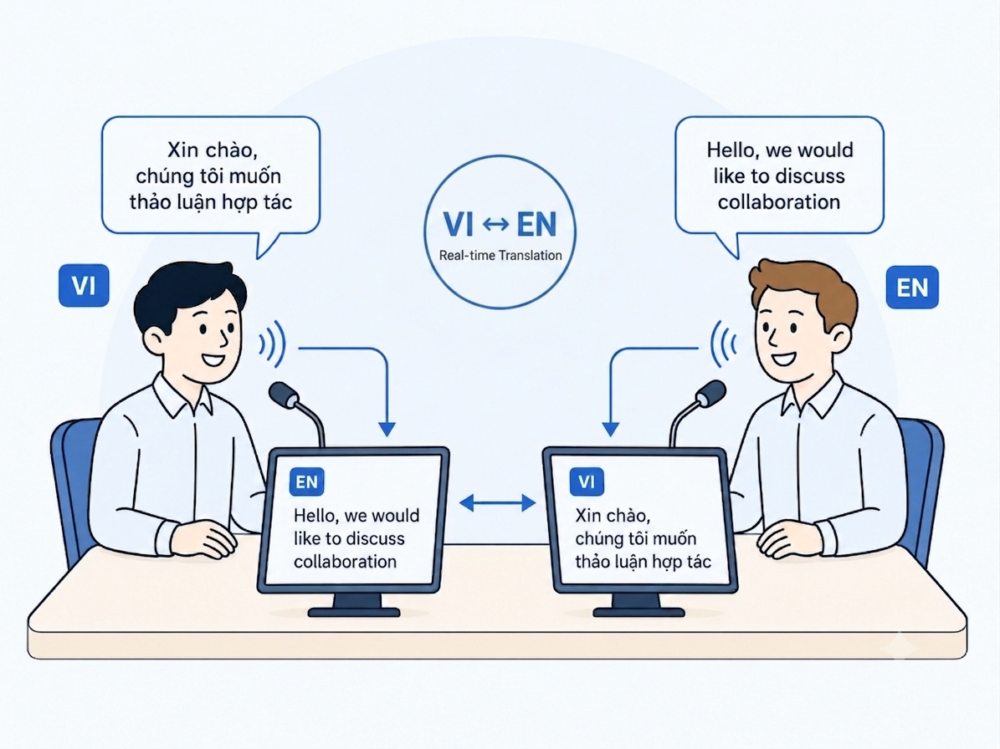

Dừng lại để chờ dịch. Quy trình dịch từng lượt làm đứt mạch suy nghĩ của người nói.

VI <-> EN
Gần thời gian thực
Họp kinh doanh
VietBridge AI
Phiên dịch gần thời gian thực cho cuộc họp trực tiếp giữa đoàn Việt Nam và đoàn Singapore.
Prototype hai thiết bị hỗ trợ VI <-> EN bằng văn bản, giữ lượt nói và ngữ cảnh trong cùng một phòng họp.
AI Singapore · Hackathon
Laptop / smartphone · In-person
01 / Problem
CHỜ
ĐỔI
NGỮ CẢNH
Hội thoại kinh doanh mất nhịp khi ngôn ngữ trở thành rào cản.
Trong cuộc họp trực tiếp, mỗi lần ngắt, chuyển lượt và dịch sai tham chiếu đều làm chậm quyết định.
Phiên dịch phải đi theo hội thoại, không được làm gián đoạn hội thoại.
Bấm, chọn, chuyển máy. Điều khiển ngôn ngữ thủ công khiến hai bên phải cùng vận hành một cuộc hội thoại.
Tham chiếu bị trôi nghĩa. Thuật ngữ, đại từ và tên dự án mất ý nghĩa khi mỗi câu bị xử lý tách rời.
02 / Trải nghiệm sản phẩm
Hai thiết bị. Một hội thoại chung.
Mỗi đại biểu dùng một thiết bị để nói và đọc độc lập, trong khi hai màn hình chia sẻ cùng ngữ cảnh.
Quy trình truyền thống
Chọn ngôn ngữ↓Bấm để nói↓Chờ xử lý↓Chuyển thiết bị
Điều khiển thủ công
Hội thoại bị ngắt
Màn hình dùng chung
Quy trình VietBridge
Nói tự nhiên↓VAD nhận diện lượt nói↓Bản chép lời + bản dịch↓Tiếp tục hội thoại
Đầu vào riêng
Xử lý song song
Màn hình riêng
Micro khởi động cùng phiên; Energy VAD tự tách lượt nói, vẫn có nút tắt/bật khi cần.
03 / Phiên dịch theo ngữ cảnh
Ý nghĩa của một cụm từ phụ thuộc vào những lượt nói xung quanh.
Lượt 1 - Tiếng Việt
"Chúng tôi dự kiến bắt đầu dự án thử nghiệm vào tháng Chín."
We expect to begin the pilot project in September.
Lượt 2 - Tiếng Anh
"What is the expected budget for the pilot?"
Bản dịch theo ngữ cảnh:
"Ngân sách dự kiến cho dự án thử nghiệm đó là bao nhiêu?"
Không có ngữ cảnh
"The pilot" có thể bị hiểu là một người hoặc một đối tượng khác. Bản dịch mất tham chiếu của cuộc họp.
Có ngữ cảnh
Hệ thống giữ các lượt nói gần nhất và thuật ngữ kinh doanh để xử lý đại từ và thuật ngữ.
Lượt nói gần nhất
Glossary
Đại từ
04 / Kiến trúc
Một pipeline. Một ngữ cảnh chung. Hai màn hình đồng bộ.
Âm thanh đi theo các chunk nhỏ; mỗi lượt nói có đường đi rõ ràng từ capture đến delivery.
01
CAPTURE
CAPTURE
Thiết bị A / micro VI
Thiết bị B / micro EN
02
UNDERSTAND
UNDERSTAND
Chunk âm thanh 40 ms
Energy VAD tách lượt nói
ASR gateway
03
CONTEXT
CONTEXT
Các lượt nói gần nhất
Business glossary
04
DELIVER
DELIVER
Phiên dịch VI <-> EN
Session manager
Đồng bộ hai màn hình
Thiết bị phổ thông
Web app chạy trên laptop hoặc smartphone trong cùng một phòng họp.
Turn-taking
Energy VAD đang hoạt động; speaker ID được gắn theo thiết bị và đại biểu.
Text output
Bản chép lời và bản dịch được đồng bộ đến hai màn hình qua WebSocket.
Cloud MVP
STT và translation hiện dùng provider bên ngoài; on-premise và edge: TBD.
05 / Điểm khác biệt kỹ thuật
MVP được thiết kế quanh các tình huống lỗi của cuộc họp.
Tách rõ điều đã có, điều đang là mục tiêu và điều vẫn cần đo lường.
Latency budget
Âm thanh được gom thành frame nhỏ và mỗi kết quả mang theo latency của provider.
TARGET: partial <= 500 ms / final <= 2 sTurn-taking
Energy VAD tách lượt; thiết bị xác định speaker. Đại biểu vẫn có thể tắt/bật micro thủ công.
IMPLEMENTED: Energy VAD + speaker IDÂm thanh thực tế
Browser bật echo cancellation và noise suppression; runtime ghi nhận SNR, clipping và noise level.
TBD: noisy-room benchmarkDeployability
Web app chạy trên laptop/smartphone; MVP dùng cloud provider. Open-model on-premise và edge chưa có.
STATUS: cloud MVP / BONUS: TBD
06 / Đánh giá
Chúng tôi chấm MVP theo đúng rubric của thử thách.
Tiêu chí · Trọng sốBằng chứng cần thuTrạng thái
Translation accuracy · 30%VI→EN + EN→VI: ý nghĩa, số liệu, thuật ngữTBD
Latency · 20%Speech end → text output, p50/p95TBD
UX & meeting flow · 20%Free-flow exchange, thao tác tối thiểuDEMO
Robustness · 15%Nhiễu, đổi lượt và speaker changesTBD
Technical design · 15%Thiết bị phổ thông, reconnect, deploymentMVP
Đã instrument
Runtime có latency, SNR, clipping, trạng thái VAD và lỗi transport để thu bằng chứng.
Trước judging
Điền p50/p95, chất lượng dịch hai chiều và kết quả noisy-room bằng test tái lập.
Không claim bonus
Open-model on-premise và edge-device vẫn là TBD, chưa phải capability của MVP.
07 / Demo trực tiếp
Demo trực tiếp: trao đổi tự do VI <-> EN với giám khảo.
Không dùng câu thoại cố định; hai bên nói tự nhiên và xem bản chép lời cùng bản dịch gần thời gian thực.
01
KẾT NỐI
Giám khảo và đội thi vào phiên02
VI -> EN
Câu hỏi kinh doanh tự do03
EN -> VI
Phản hồi tự nhiên04
TURN-TAKING
Đổi người nói và thêm nhiễu05
BẰNG CHỨNG
Đối chiếu output và latencyPHIÊN HỌP: APT123
Giám khảo + đội thiWebSocket đã kết nối
Đại biểu Việt Nam
"Chúng tôi dự kiến bắt đầu dự án thử nghiệm vào tháng Chín."
We expect to begin the pilot project in September.
Giám khảo Singapore
"What is the expected budget for the pilot?"
Ngân sách dự kiến cho dự án thử nghiệm đó là bao nhiêu?
Energy VAD: đang ngheLatency: TBDOutput: text
08 / Video demo
Video là bằng chứng dự phòng, không thay thế live demo.
Link Google Drive sẽ ghi lại trao đổi tự do trong điều kiện họp thực tế trước judging session.
▶
VIDEO DEMO CHƯA CÓ LINK
Dán link Google Drive vào thuộc tính data-video-url của khung này.
01
Free-flow VI <-> EN
Đại biểu Việt Nam và đối tác Singapore trao đổi tự nhiên, không đọc kịch bản cố định.
02
Context + turn-taking
Đổi người nói và nhắc lại thuật ngữ "pilot" để kiểm tra tham chiếu giữa các lượt.
03
Bằng chứng thực tế
Ghi output, latency và phản ứng khi có tiếng ồn phòng; mọi số chưa đo giữ là TBD.
09 / Lộ trình và đề nghị
Từ prototype 2 ngày đến hệ thống có thể triển khai.
Hôm nay: MVP
Phiên dịch text VI <-> EN hai chiềuĐã có
Web app hai thiết bị trong cùng phòngĐã có
Energy VAD + ngữ cảnh gần nhấtĐã có
Metric transport và recoveryĐã có
Tiếp theo: chứng minh và triển khai
Benchmark accuracy + baselineTBD
Đánh giá trong phòng nhiều nhiễuTBD
Open-model on-premise / edgeTBD
Thêm cặp ngôn ngữ ít tài nguyênRoadmap
Judging session: chứng minh free-flow exchange và hoàn tất evaluation bằng số đo thực.
Công nghệ nên dịch ngôn ngữ.
Không làm gián đoạn hội thoại.
Không làm gián đoạn hội thoại.
Đoàn Việt NamĐoàn SingaporeVI <-> ENGần thời gian thựcHÃY NÓI.